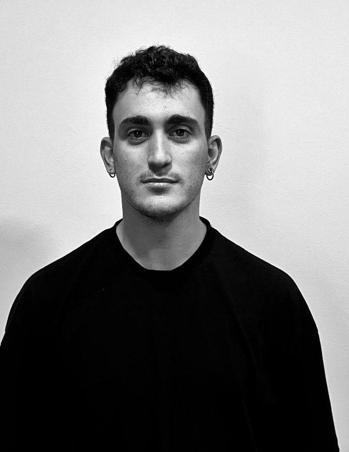

UX/UI and product designer · Barcelona
Bernat Martínez Ríos.
I design digital products, from the idea to an app that works, using AI tools like Claude.
Projects.
Two products of my own, designed and built from start to finish.
MVP complete
Tu llavero
A shared record for a rented flat, from the move-in report to getting the deposit back.
In development
newbie
Play sports with others, at your level: discover a nearby activity, join and meet the people going.
Screenshots with sample data.
Right now
Building Tu llavero and newbie with Claude Design and Claude Code. Running training coordination at QSTAR ROV Training Centre in Barcelona. Studying for a Bachelor's in Marketing and Market Research at UOC.
About me.

Download CVFor more than 5 years I've watched people use (and get stuck on) digital tools. Today I run the learning platform (LMS) and the full student journey at an international ROV training centre.
Before that I handled CRM, customer service and marketing. That daily work taught me to spot where a process breaks for the people using it, and to fix it. I trained in UX/UI design and I apply it to my own products, like Tu llavero and newbie.
Experience
- ROV Training Coordinator & LMS Administrator
QSTAR ROV Training Centre & Subsea Solutions - Administrative Officer
Barcelona Serveis Municipals: Bicing i Endolla and Port Olímpic - Marketing and Administration Manager
HG Gestió Grup
Education
- Bachelor's in Marketing and Market Research
UOC - Master's in UX/UI Design
Nuclio Digital School - Higher Diploma in Digital Marketing and Advertising
ESN Sant Cugat
Tools
Design and digital
- Claude AI (Claude Design and Claude Code)
- Figma
- UX/UI and prototyping
- Website management
- Social media
Data and office tools
- Power BI
- SharePoint
- Google Workspace
- Microsoft 365
Management and e-learning
- Moodle (LMS)
- HabitatSoft
- Holded
My niche
- UX/UI
- Digital product
- Mobile apps
- Design systems
- Brand
- AI tools
Languages
Native Catalan and Spanish · English C1, used daily at work
Let's talk.
I'm looking for my next step as a UX/UI and product designer. If you have a role, a project or want to talk about my work, get in touch.
bernat.martnez@gmail.com